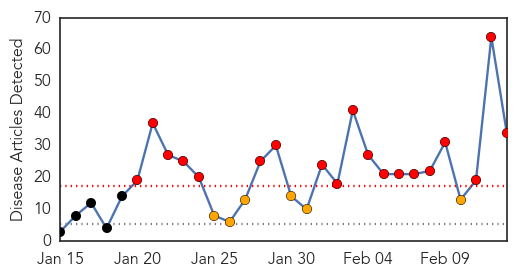
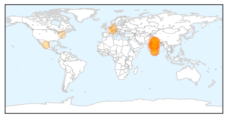
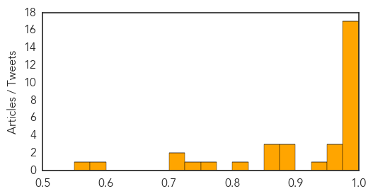
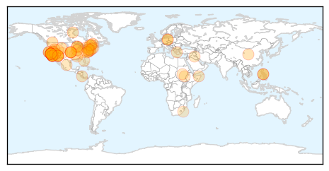

Swine Flu
30-Day Web Trend
19 alerts, 6 warnings

30-Day Twitter Trend
0 alerts, 0 warnings

Article Locations
Article Confidences
Top Articles:
- 1.000
- Tamil Nadu sees 186 H1N1 cases this year
- 0.999
- PM steps in as swine flu toll mounts to 485
- 0.999
- Swine flu spike raises concern in India
- 0.999
- Surveillance increases across Vadodara district
- 0.999
- First swine flu death in city
- 0.999
- Swiss Tourist Dies of Swine Flu in India ‹ Newsweek Pakistan
- 0.999
- The Union Government Issues guidelines to deal with increasing number of H1N1 cases
- 0.997
- Telangana: Death toll rises to 45 after 3 more die of Swine Flu
- 0.995
- Swine flu in India: 45-yr-old man dies in UP, toll mounts to 3
- 0.995
- State has sufficient provisions to tackle swine flu: MP Govt tells HC
- 0.994
- Swine Flu Kills More Than 400 People in India This Year, Double All of 2014
- 0.991
- Nadda Meets PM to Discuss Swine Flu
- 0.990
- 2 more die of swine flu in Punjab, toll due to H1N1 virus rises to 21
- 0.988
- Rajasthan swine flu toll touches 135
- 0.987
- Swine flu devours 4
- 0.983
- 6 Die in 24 Hours Due to Swine Flu in Madhya Pradesh, Say Sources
- 0.983
- HC steps in as MP govt maintains 'silence' on swine flu toll
- 0.974
- India sees big spurt in swine flu cases in 2015
- 0.968
- Health Minister meets PM Modi to discuss swine flu cases
- 0.953
- 16 more test positive for swine flu in Mumbai
- 0.925
- Scindia demands swine flu labs at Bhopal, Indore and Gwalior
- 0.898
- Eula Bliss’s timely study of disease and vaccination
- 0.894
- Swine flu drug: more stockists to get licences
- 0.893
- Swine Flu epidemic: Congress calls it criminal negligence
- 0.870
- Scindia demands swine flu labs at Bhopal, Indore and Gwalior
- 0.869
- Jyotiraditya Scindia demands swine flu labs in Bhopal, Indore and Gwalior
- 0.854
- Madhya Pradesh high court raps goverment for swine flu apathy
- 0.801
- Vaccines play crucial role in medicine
- 0.766
- Swine flu: HC pulls up Govt for casual approach
- 0.748
- One tests positive for H1N1 in Mysuru
- 0.718
- 'Will Tackle H1N1 Drug Shortage'
- 0.700
- Mysuru gets hi-tech lab for testing H1N1, Ebola
- 0.600
- Swine flu scare pushes up sale of surgical masks in Bhopal
- 0.558
- Canada to introduce cheaper drugs in India
Top Tweets:
-
No tweets found for Feb 13, 2015
Measles
30-Day Web Trend
24 alerts, 1 warnings

30-Day Twitter Trend
5 alerts, 0 warnings

Article Locations
Article Confidences

Top Articles:
- 0.983
- Why you should, and shouldn't, worry about measles - KOAA.com
- 0.982
- Vaccine refusals blamed for measles outbreak
- 0.981
- California has three new measles cases, Arizona says outbreak winding down
- 0.981
- California has three new measles cases, Arizona says outbreak winding down
- 0.980
- California has 3 new measles cases, Arizona says outbreak winding down
- 0.977
- Mendota Reporter More cases of measles in Illinois
- 0.973
- Measles Hits Canada in Disneyland Outbreak
- 0.971
- Health Official: Measles Vaccine Does Not Cause Autism
- 0.970
- no measles in Spring Creek
- 0.963
- Southern Nevada confirms 5th measles case
- 0.956
- Villanova nursing professor advises parents on steps to take to prevent measles
- 0.950
- Two suspected measles cases in Portage County
- 0.948
- Berlin measles cases links back to United States outbreak
- 0.947
- Public Health Notice: Measles -- OTTAWA, Feb. 12, 2015
- 0.947
- Public Health Notice: Measles
- 0.946
- Should certain companies require employees to be vaccinated?
- 0.933
- Measles cases have health officials concerned about exposure
- 0.924
- Measles fears: Mild case of mass hysteria
- 0.920
- Amid Measles Outbreak, Physicians Groups Urge Vaccination
- 0.913
- Vaccines for children should be mandatory
- 0.896
- UN urges stepped-up measles surveillance in Caribbean
- 0.888
- Premier chastises parents who don’t vaccinate kids against measles
- 0.868
- POV: It’s Time to Take the Controversy Out of Vaccination
- 0.853
- Berlin measles traced to refugees, but 2 cases linked to US
- 0.840
- Parents weigh the risks and benefits
- 0.821
- Disneyland asked health officials to say park was safe for vaccinated people
- 0.810
- AP Exclusive: Disney gave input on measles health messages
- 0.805
- Measles Outbreak Cues New Action on Vaccination Rules
- 0.802
- Fact-checking vaccines and measles
- 0.802
- Measles might be on the wane in Orange County
- 0.802
- Disney responds to measles outbreak - Theme park accused of misleading public - Kuwait Times
- 0.799
- Costa Rican health officials worry that children traveling to US will bring back measles -The Tico Times
- 0.799
- Measles in Berlin traced to unvaccinated refugees but two cases linked to US
- 0.797
- Measles Spread Highlights Vaccine Exemptions; Veteran Physician Offers Historical Perspective
- 0.795
- AP Exclusive: Disney gave wording suggestions to health officials during measles outbreak
- 0.795
- AP Exclusive: Disney gave wording suggestions to health officials during measles outbreak
- 0.795
- Arizona official: Measles outbreak apparently winding down
- 0.779
- Ottawa Public Health not tracking children’s vaccinations
- 0.774
- PAHO urges strong surveillance, vaccination coverage after recent measles outbreaks
- 0.772
- Disney gave input on measles health messages
- 0.770
- The science is clear: anti-vaxxers are immune to the truth
- 0.762
- Disney offers measles advice to California health officials
- 0.756
- Commuter infected with measles is San Francisco LinkedIn employee
- 0.756
- AP Exclusive: Disney gave input on measles health messages
- 0.751
- Bay Area commuter with measles is LinkedIn employee
- 0.734
- The Polio Vaccine Killed Her Father, But She’s Still Pro-Immunization
- 0.720
- Article: Vaccinations: Truth or Dare
- 0.719
- Polio Vaccination Campaign Reaches 26,000 Children in South Sudan
- 0.709
- Fifth case of measles at Las Vegas restaurant traced to infant
- 0.708
- South Sudan: Fighting a measles outbreak in Yida refugee camp
Showing top 50 articles...
Top Tweets:
-
No tweets found for Feb 13, 2015